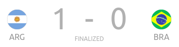

Day 21 - The Final
Argentina v Brazil

Goals
Di Maria 22'
Argentina have won their first Copa America since 1993. Messi has finally won a major tournament for the national team and it could have gone either way. Argentina took the lead when a long ball from De Paul was not controlled properly by Lodi and Di Maria got in behind and chipped the keeper to score. The second half was all Brazil as Firmino was brought on to provide space. Richarlison thought he scored the equalizer from a rebound but it was disallowed for offside. The Brazil pressure was relentless. Messi did have space on the counter but slipped as he tried to round Ederson. There was an amazing save from Martinez from Gabigol who hit a great volley. In the end, it was Argentina who managed to prevail.